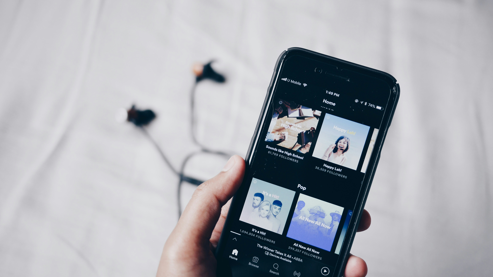

Hoy en día, la música es el alma de nuestra rutina. Nos acompaña mientras trabajamos, cocinamos, hacemos ejercicio, o simplemente descansamos. ¿Y qué mejor manera de disfrutarla que con Spotify Premium? Aquí te contamos los beneficios de usar Spotify Premium APK en iOS, explicado de forma simple y divertida, para que te animes a probarlo.
¿Alguna vez estabas bailando como si no hubiera mañana y, de repente, un anuncio te corta el flow? Con Spotify Premium, eso es cosa del pasado. Olvídate de esos "interrupciones comerciales" y disfruta de música sin pausas. Tu fiesta, aunque sea en la ducha, estará a salvo.
La conexión Wi-Fi no siempre es tu mejor amiga, especialmente cuando sales. Con Spotify Premium, puedes descargar tus playlists favoritas y escucharlas sin conexión. Así que, si estás en medio de la nada o en un avión, ¡la música siempre estará contigo!
Con el modo premium, la calidad de audio es espectacular. Sentirás que estás en un concierto privado (sin las multitudes y el sudor). Es como si tu artista favorito estuviera cantando solo para ti.
En la versión gratuita, a veces parece que Spotify tiene su propia agenda y te obliga a escuchar lo que quiere. Pero con Premium, tú tienes el control total. ¿Quieres escuchar la misma canción 10 veces seguidas? ¡Adelante! Nadie te juzga aquí.
Para los indecisos (sí, hablamos de ti), este beneficio es un salvavidas. Con Premium, puedes saltar canciones tantas veces como quieras. Porque, seamos sinceros, a veces necesitas escuchar 20 canciones antes de encontrar "la adecuada".
¿Tienes un iPhone, un iPad y un Apple Watch? ¡No hay problema! Spotify Premium se sincroniza en todos tus dispositivos iOS. Así que no importa dónde estés, tu música siempre estará a tu alcance.
¿Una tarde lluviosa? ¿Un viaje por carretera? Spotify Premium tiene la playlist perfecta para cada momento. Y lo mejor, sin interrupciones.
Tener Spotify Premium APK en iOS es como tener un DJ personal que siempre sabe lo que necesitas. Olvídate de los anuncios, las restricciones y el estrés. Solo música, de la mejor calidad, y cuando tú quieras.
Así que, ¿qué esperas? Dale a tu vida el toque musical que merece. Y recuerda, cada canción tiene el poder de mejorar tu día, ¡aprovéchalo! 🎶